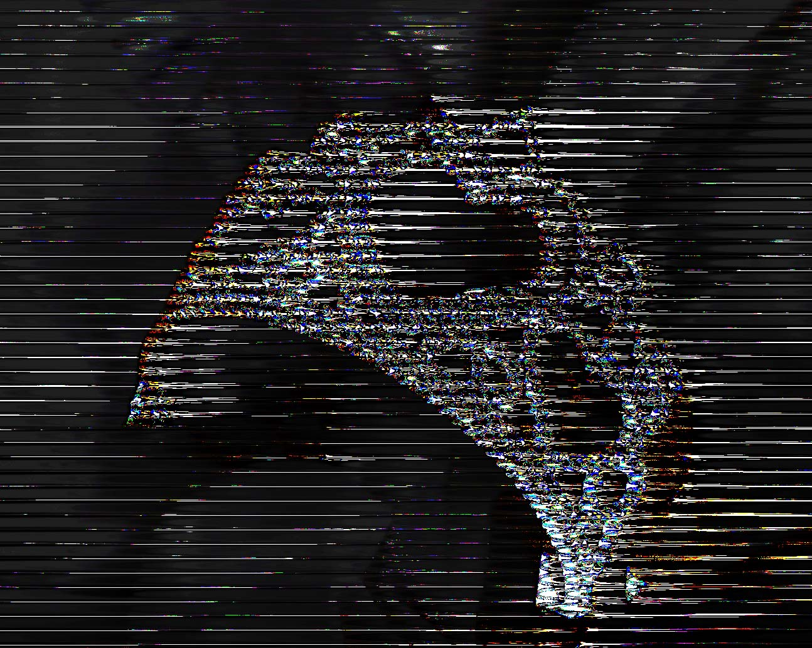
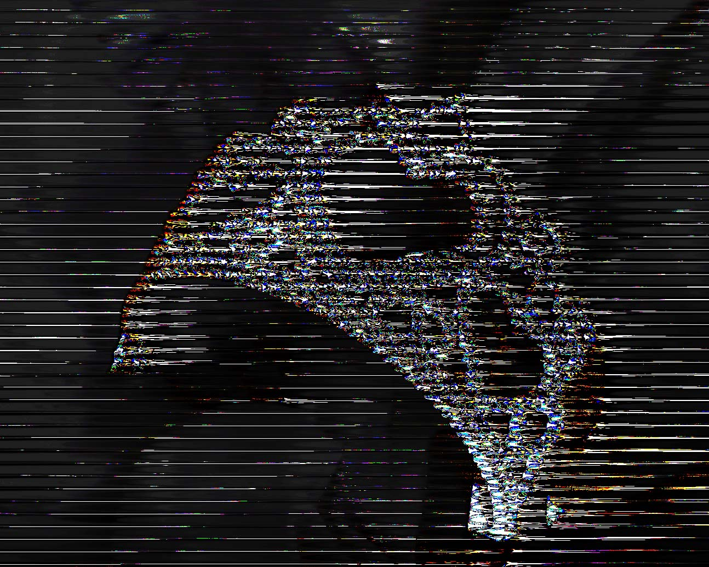

Glitch Art.
 

These images were made from PNG's that contain source code modified in different ways to produce new effects. The first image, "tiara", was made in app called "Audacity" that enabled the image's source code to be turned to an editable audio file which can be transferred back to an image. The second image, "everyone disliked that" was made with the use of a text editor with certain chunks of image code replaced with "dislike". This corrupted the image just enough to change the visuals but retain the stability of the file. The third image is a corrupted Alice in Wonderland photo. This was created partially with the use of text edit, then Audacity to maximize the glitches.